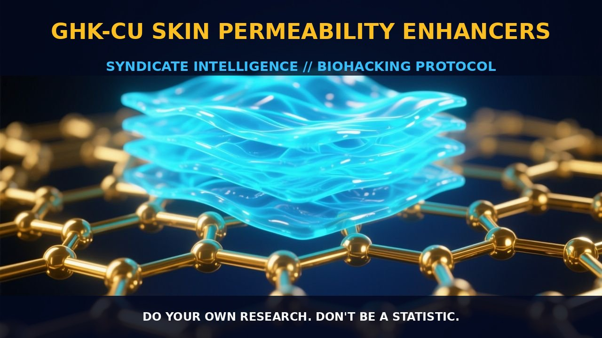

GHK-Cu Skin Permeability Enhancers: Microneedle Technology in Action

1. The Mechanism
GHK-Cu, a copper-chelated form of the tripeptide glycyl-L-histidyl-L-lysine (GHK), emerges as a promising ingredient in skin care products due to its regenerative and protective actions. GHK-Cu is known for its ability to stimulate collagen synthesis, enhance glycosaminoglycan production, and modulate the activity of metalloproteinases and their inhibitors. It also shows potential in attracting immune and endothelial cells to the site of an injury, accelerating wound healing and skin repair.
GHK is naturally present in human plasma, saliva, and urine but its levels decline with age, making it a valuable ingredient for anti-aging products. However, its hydrophilic nature and low partition coefficient pose challenges for its permeation through the stratum corneum. Studies have shown that metal complexation and chemical modifications such as palmitoylation can enhance the permeability of GHK-Cu, but its efficacy still depends on the degree of penetration into the skin layers. This is where microneedle technology comes into play, offering a promising methodology for enhancing skin permeation.
2. Biological Leverage
Microneedles provide a novel approach to enhance the absorption of GHK-Cu by creating microconduits in the stratum corneum, the outermost layer of the skin. These microconduits allow for the passage of larger molecules, such as GHK-Cu, into the deeper layers of the skin, including the dermis, where it can exert its regenerative effects. The depth and percentage of microneedle penetration are directly correlated with the application force, which in turn influences the extent of permeation enhancement.
Microneedles have been shown to significantly increase the permeability of GHK-Cu through human skin. In a study published in Pharm Res, it was observed that after 9 hours, nearly 134 ± 12 nanomoles of peptide and 705 ± 84 nanomoles of copper permeated through microneedle-treated skin, while intact skin showed negligible permeation. This method not only enhances the delivery of GHK-Cu but also ensures that it reaches the site of action where it can exert its biological effects more effectively.
The biological leverage of microneedles extends beyond just increasing permeability. By creating channels through the stratum corneum, microneedles facilitate the transport of GHK-Cu into the dermis, where it can stimulate collagen synthesis, enhance glycosaminoglycan production, and modulate the activity of metalloproteinases and their inhibitors. This leads to improved skin elasticity, density, and firmness, and may also contribute to the reduction of fine lines and wrinkles.
3. Tactical Implementation
To implement microneedle-assisted delivery of GHK-Cu effectively, it is crucial to select the appropriate microneedle design and application force. Microneedles should be designed to create microconduits that penetrate the stratum corneum without causing significant irritation or damage to the skin. The application force should be sufficient to create channels that allow for the passage of GHK-Cu into the deeper layers of the skin, but not so high as to cause discomfort or injury.
In practical application, microneedle arrays can be used to pre-treat the skin before the application of GHK-Cu-containing products. This can be done by applying a microneedle array to the skin for a few minutes, allowing it to create microconduits, and then applying a GHK-Cu solution or cream. The microneedle treatment can be repeated every few days, depending on the product and the desired effect. It is important to note that microneedle treatments should be done gently to avoid irritation, and the skin should be cleansed and dried before application.
Stacking GHK-Cu with other skin care ingredients can also enhance its effectiveness. For instance, combining GHK-Cu with hyaluronic acid and ceramides can provide additional hydration and barrier protection, allowing GHK-Cu to penetrate more effectively and exert its regenerative effects. Additionally, incorporating antioxidants such as palmitoyl tripeptide-5 and ergothioneine can protect GHK-Cu from oxidative stress and enhance its anti-inflammatory properties.
Prostar Life Hack
Use microneedle arrays to pre-treat the skin before applying a GHK-Cu solution or cream. This enhances penetration and effectiveness of the GHK-Cu, leading to improved skin elasticity, density, and firmness.
[ AUTHOR: LEAD TECHNICAL RESEARCHER ]